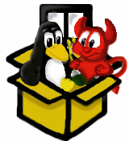

Latest release: Bochs 2.7
Bochs 2.7 is the latest major release. Here is the brief summary of changes :
- Bugfixes for CPU emulation correctness (CPUID/VMX/SVM fixes to support Windows Hyper-V as guest in Bochs)
- Improvements for the plugin handling to simplify Bochs extensions
- Added "multiple NICs" support to the NE2000 and E1000 devices
- Added experimental FTP service for networking modules 'vnet' and 'socket'
- Fixes and improvements for all supported Voodoo graphics adapters
- Added USB keyboard emulation with most of the keys supported
- GUI "cmdmode": create a headerbar event with key combo starting with F7
- LGPL'd VGABIOS updated to version 0.8a (new VGABIOS for Voodoo Banshee)
The binary packages for Linux and Windows are built with these features :
- x86-64 emulation with all optimizations enabled
- devices:
- chipset: PCI (i430FX / i440FX / i440BX), ACPI
- video: Bochs VBE, Cirrus SVGA and 4 Voodoo models
- sound: SB16 (ISA) and ES1370 (PCI)
- network: NE2000 (ISA/PCI) and E1000 (PCI)
- USB: OHCI, UHCI, EHCI, xHCI and 8 pluggable device types
- other: game port, bus mouse
- Display libraries:
- Linux: nogui, rfb, sdl2, term, vncsrv, wx, x
- Windows: nogui, rfb, win32
Details on what has changed since version 2.6.11
Previous release: Bochs 2.6.11
Bochs 2.6.11 is a bugfix release. Here is the summary of changes :
- General
- Added 64-bit support to the NSIS installer script
- Several fixes in the build system based on Debian patches
- CPU / CPUDB
- Bugfixes for CPU emulation correctness
- Many critical bugfixes for Protection Keys, AVX512*, VMX/SVM, SHA, GFNI emulation
- ! Implemented CET (Control Flow Enforcement Technology) emulation according to Intel SDM rev071
- I/O Devices
- Added missing Cirrus SVGA bitblt feature "transparent color compare"
- Some fixes in HPET emulation (patch by Oleg)
- Fixed disk image lock mechanism in the USB MSD case
- BIOS / VGABIOS
- LGPL'd VGABIOS updated to version 0.7b (Fixed VESA extension 'read EDID' for Bochs VBE and Cirrus)
- Updated SeaBIOS ROM image to current version 1.13.0
- Added SeaVGABIOS ROM image for the Cirrus adapter
- Bochs BIOS built to work with CPU level 5 again
Details on what has changed since version 2.6.10
Bochs Binary and Source Releases
The latest release of Bochs is available in these file formats :
- Win64 binary NSIS installer package (EXE)
- Linux binary RPM (64 bit)
- Platform independant source package (TAR.GZ)
- Win32 specific source package prepared for VS2019 (ZIP)
- Linux source RPM
You can download any release since March 2001 on the
Files Page on SF.
Download SVN
Snapshot
SVN Snapshot:
Bochs, like many other open source projects, uses SVN (Subversion) to keep
track of source code. Unlike the current release, the SVN version of the
sources contains everything the developers have written to this date, and it
can change daily (or even hourly). As a result, the SVN version of Bochs will
have more features and bug fixes than the release, but also it may be somewhat
less stable. You can decide if you prefer to go exploring and try out our
newest code, or stick with the better-tested release.
The SVN snapshots are provided as a convenience only. Of course, you could
also get the same information using SVN itself. Some of the benefits of
using SVN directly are: you can get any release or version, view the log
messages that say what files were changed, and make patches very easily
with "svn diff -u".
Last Modified on .